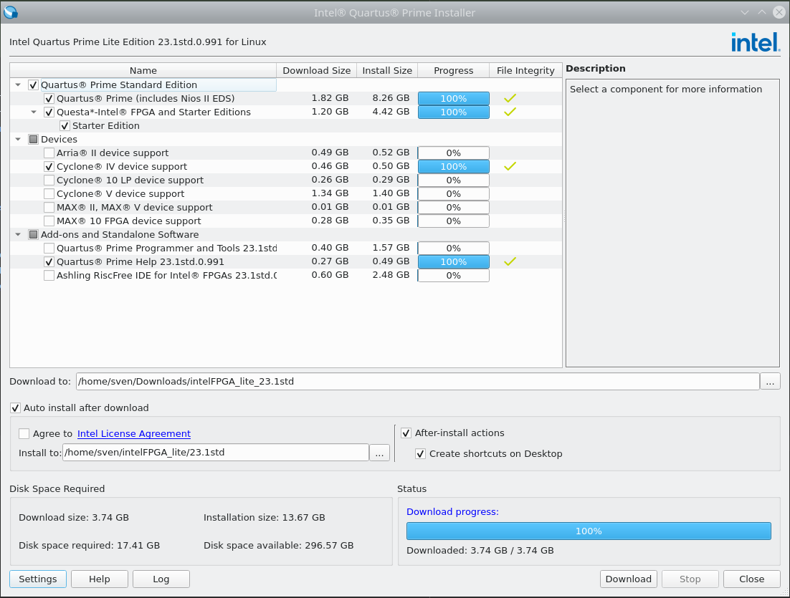
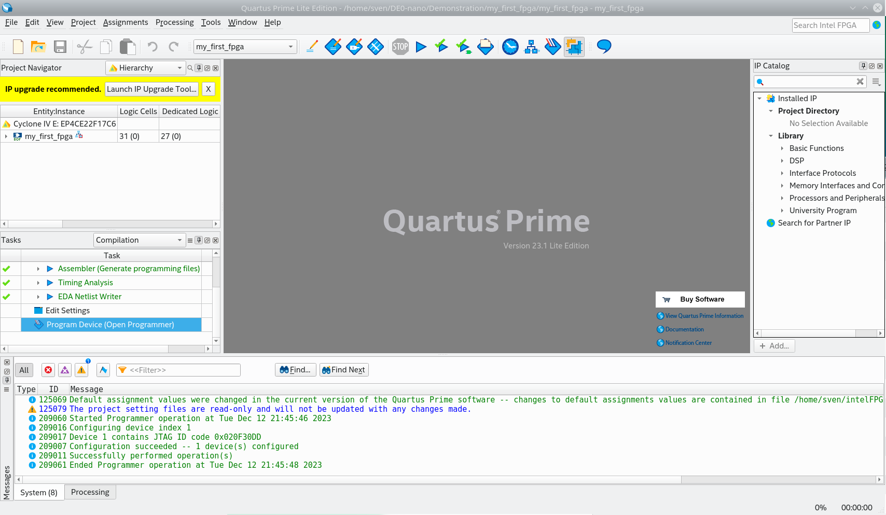
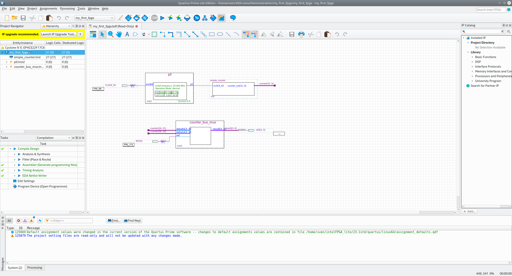
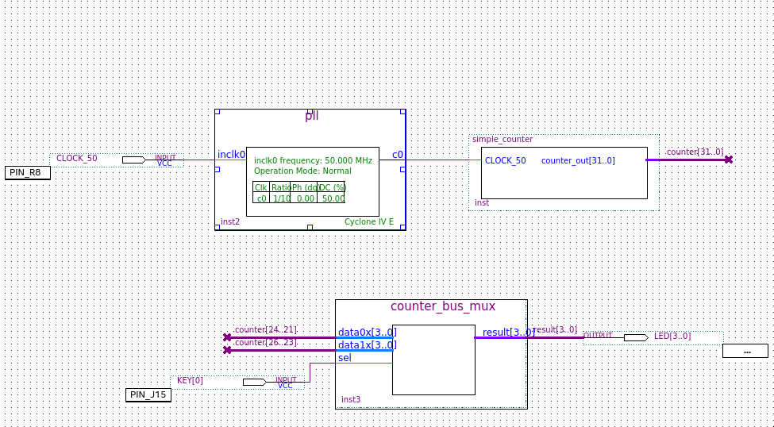
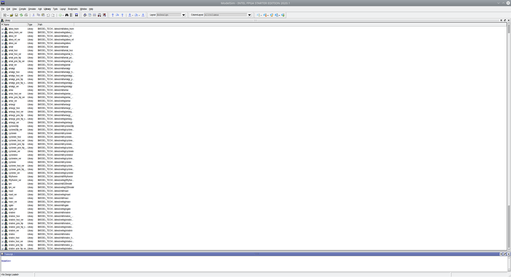

Heute möchte ich eine Blogpost-Serie über Hardware-Programmierung starten. Wir beginnen mit einer Einführung in die Hardware-Programmierung mit dem FPGA-Board DE0 Nano von der ehemaligen Firma Altera, jetzt Intel. Unten sehen Sie ein Bild des kleinen Boards. Es scheint, dass man dieses Board noch bestellen kann, aber ich habe es nicht getestet.

Wir zeigen, wie die Umgebung eingerichtet wird. Im ersten Schritt zeigen wir, wie man Quartus auf einer Debian-Distribution herunterlädt und installiert und den Programmierer konfiguriert. Im zweiten Schritt installieren wir die Simulationssoftware Modelsim.
Quartus IDE
Das Installationsprogramm finden Sie unter hier. Nach dem Akzeptieren der Lizenzvereinbarung wird das 60 MB große Quartus-Installationsprogramm heruntergeladen. Wechseln Sie in der Shell-Konsole zu Downloads und ändern Sie die Berechtigungen, um die Datei ausführbar zu machen, und führen Sie sie aus
$ cd ~/Downloads
$ chmod +x ./qinst-lite-linux-23.1std-991.run
$ ./qinst-lite-linux-23.1std-991.runDie grafische Benutzeroberfläche des Installationsprogramms wird geöffnet und Sie können die entsprechenden Pakete auswählen. Wählen Sie die Pakete wie unten gezeigt aus (auf diesem System sind sie bereits installiert): Bitte überprüfen Sie, ob auf der Partition, auf der Sie die Software installieren möchten, etwa 20 GB Speicherplatz frei sind. Die Downloadgröße beträgt etwa 4,4 bis 5,0 GB.

Klicken Sie dann auf den Download. Der Download und die Installation nehmen etwas Zeit in Anspruch, holen Sie sich also zwischendurch eine Tasse Kaffee. Nach Abschluss der Installation in Ihrer Konsole gehen Sie zur Installation – Sie haben sie wahrscheinlich in Ihrem Home-Verzeichnis oder unter /opt installiert – und führen den Shell-Befehl aus, um Quartus zu starten – oder klicken Sie einfach auf das Desktop-Symbol.
$ cd intelFPGA_lite/23.1std/quartus/bin/
$ ./quartus
Jetzt ist es an der Zeit, die CD aus dem DE-0-Nano-Board zu nehmen und ihren Inhalt auf Ihren Computer zu kopieren … Oder laden Sie sie einfach von hier herunter. (Sie müssen sich registrieren).
Nach dem Kopieren öffnen Sie das Projekt my_first_fpga. Sie sehen die verschiedenen Code-Teile in der Projektansicht links.
Dieses Tutorial ist im De0-Nano-Benutzerhandbuch auf den Seiten 40 bis 80 ausführlich dokumentiert DE0-nano-Benutzerhandbuch
Zitat aus dem Benutzerhandbuch (S. 44): Erstellen Sie ein Design, das die LEDs auf der Entwicklungsplatine mit zwei unterschiedlichen Frequenzen blinken lässt. Dieses Design ist einfach zu erstellen und gibt Ihnen visuelles Feedback, dass das Design funktioniert. Natürlich können Sie Ihr DE0-Nano-Board auch für andere Designs verwenden. Für das LED-Design schreiben Sie Verilog-HDL-Code für einen einfachen 32-Bit-Zähler, fügen eine PLL-Megafunktion (Phase-Locked Loop) als Taktquelle hinzu und fügen eine 2-Input-Multiplexer-Megafunktion hinzu. Wenn das Design auf dem Board läuft, können Sie einen Eingangsschalter drücken, um die Zählerbits zu multiplexen, die die Ausgangs-LEDs steuern.

Die Ansicht unten zeigt die Quartus-Block-Designdatei (bdf) für das einfache Projekt my_first_fpga. Sie zeigt eine PLL-Megafunktion und eine (Bus-) Multiplexer-Megafunktion, die IP (=Intellectual Property von Altera/Intel) ist. Und dann gibt es eine Verilog-Datei, die unsere benutzerdefinierte Zählerlogik enthält, wie unten dargestellt.

//It has a single clock input and a 32-bit output port
module simple_counter (
CLOCK_50,
counter_out
);
input CLOCK_50 ;
Ausgang [31:0] counter_out;
reg [31:0] counter_out;
always @ (posedge CLOCK_50) // bei positiver Taktflanke
begin
counter_out <= #1 counter_out + 1;// Zähler inkrementieren
end
endmodule // Ende des Moduls counter
Und um die Pin-Zuordnung zu überprüfen, öffnen wir „Assignments >> Pin Planner“ image:../quartus_pin_assignment.png [Quartus Pin Assignment]
Jetzt können wir den Compiler ausführen – der sich bei der Hardware-Programmierung etwas von Software-Compilern unterscheidet –, aber darauf gehen wir in einem anderen Blogbeitrag ein.
image:../quartus_compile_report.png [Quartus Compile Report]
Aus dem Kompilierungsbericht geht hervor, dass eine von insgesamt vier PLLs verwendet wird. Ansonsten verbrauchen wir weniger als 1 Prozent der Ressourcen.
Bevor wir die Platine programmieren können, müssen wir zunächst die USB-Einstellungen unserer Distribution konfigurieren, wie unter hier
Gemäß „Driver Setup on RedHat Linux Enterprise 5 and Above“, das auch für Debian Buster/Bullseye gilt, erstellen wir als Root-Benutzer eine neue Datei /etc/udev/rules.d/51-usbblaster.rules
# Intel FPGA Download Cable
SUBSYSTEM==„usb“, ATTR{idVendor}==„09fb“, ATTR{idProduct}==„6001“, MODE=„0666“
SUBSYSTEM==„usb“, ATTR{idVendor}==„09fb“, ATTR{idProduct}==„6002“, MODE=„0666“
SUBSYSTEM==„usb“, ATTR{idVendor}==„09fb“, ATTR{idProduct}==„6003“, MODE=„0666“
# Intel FPGA Download Cable II
SUBSYSTEM==„usb“, ATTR{idVendor}==„09fb“, ATTR{idProduct}==„6010“, MODE=„0666“
SUBSYSTEM==„usb“, ATTR{idVendor}==„09fb“, ATTR{idProduct}==„6810“, MODE=„0666“
Dann müssen wir Quartus beenden und den Computer neu starten, das USB-Kabel von Terasic einstecken und es mit Ihrer Platine verbinden.
Führen Sie dann die folgenden Schritte aus, wie unter https://www.intel.com/content/www/us/en/support/programmable/support-resources/download/dri-quartus.html beschrieben.
-
Starten Sie die Quartus® II-Software.
-
Wählen Sie im Menü „Tools“ die Option „Programmer“ aus. Das Fenster „Programmer“ wird geöffnet.
-
Klicken Sie auf die Schaltfläche „Hardware Setup…“, um das Fenster „Hardware Setup“ zu öffnen. Die ausgewählte Programmierhardware wird als „Aktuell ausgewählte Hardware“ angezeigt. Bereits eingerichtete Programmierhardware wird im Fenster „Verfügbare Hardwareelemente“ angezeigt. Klicken Sie auf die Schaltfläche „Hardware hinzufügen“, um das Fenster „Hardware hinzufügen“ zu öffnen, wenn die gewünschte Programmierhardware nicht im Fenster „Verfügbare Hardwareelemente“ aufgeführt ist. Wählen Sie das entsprechende Programmierkabel oder die entsprechende Programmierhardware aus der Liste „Hardwaretyp“ aus. Wählen Sie bei Bedarf den entsprechenden Port und die Baudrate aus. Klicken Sie auf „OK“. Wählen Sie die Programmierhardware, die Sie verwenden möchten, in der Liste „Verfügbare Hardwareelemente“ aus. Klicken Sie auf „Schließen“. Ihre Programmierhardware wurde eingerichtet. (Detaillierte Informationen zur Programmierung von Intel FPGA-Geräten finden Sie in der Quartus II-Hilfe.)
Jetzt können Sie die Platine mit der angegebenen sof (sram-Objektdatei) programmieren. Wie der Titel sram andeutet, handelt es sich hierbei um eine flüchtige Programmierung, die nach dem Ausschalten der Stromversorgung verloren geht.
Uns fehlt noch ein wichtiges Stück Software, nämlich die Simulationssoftware Modelsim. Wir zeigen dies in Zukunft
Modelsim
Der Download-Link für Modelsim für Quartus ist hier angegeben.
Um Modelsim auf einem Debian-System zu installieren, müssen einige 32-Bit-Bibliotheken installiert werden.
Für Ubuntu und Debian lauten die Befehle wie folgt:
$ sudo dpkg --add-architecture i386
$ sudo apt-get update
$ sudo apt-get install libc6:i386 libncurses5:i386 libstdc++6:i386 lib32ncurses6 libxft2 libxft2:i386 libxext6 libxext6:i386Anschließend muss die heruntergeladene Binärdatei ausführbar gemacht und ausgeführt werden
$ cd ~/Downloads
$ chmod +x ModelSimSetup-20.1.1.720-linux.run
$ ./ModelSimSetup-20.1.1.720-linux.runJetzt kann es verwendet werden (hauptsächlich müssen wir noch einige Dinge konfigurieren, damit es von Quartus aus gestartet werden kann). Als Nächstes erstellen wir einen einfachen Schaltkreis mit Testbench, damit der Simulator getestet werden kann.
Der Simulator wird durch Ausführen von qhsim im Binärordner gestartet
$ cd ../intelFPGA/20.1/modelsim_ase/bin
$ ./qhsim
Fortsetzung folgt…